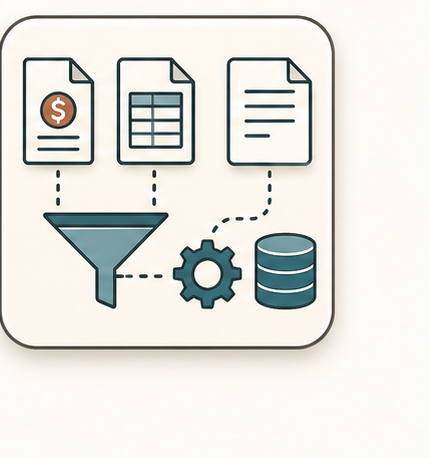
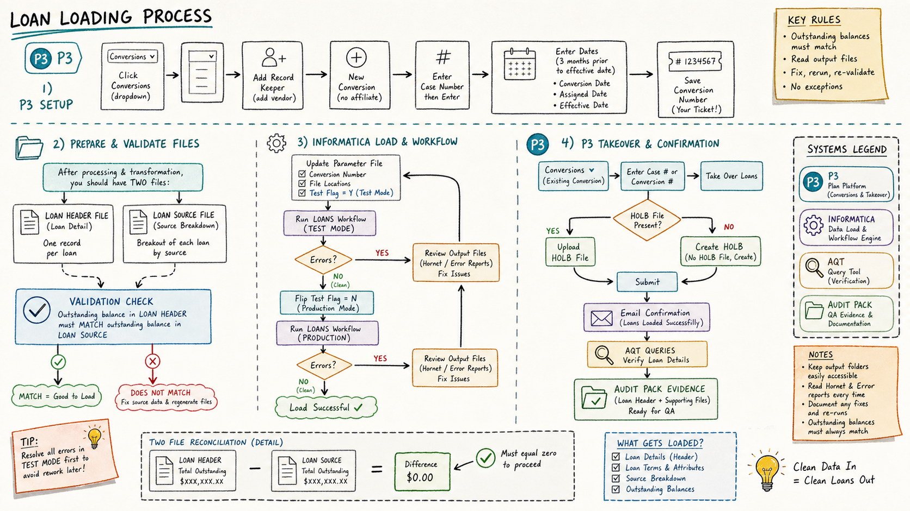

Loan Loading
Set up P3 conversion records, run Informatica, then take over loans.

Multi-branch visual route

Decisions that change the route
Did P3 generate the conversion number?
Do loan header and loan source balances match?
Did the test run clear without errors?
Is there an HOLB file or should P3 create one?
Inputs -> action -> output
Vendor name
Case number
Effective date
Loan header file
In P3, open the plan, choose Conversions, add record keeper, enter vendor name, apply, and save.
Create a new conversion with the case number, no affiliate, conversion date and assigned date three months before effective date, and effective date.
Save and capture the generated conversion number.
Validate loan header and loan source: outstanding balance in header must match source breakout.
P3 conversion number
Loaded loan records
HOLB upload/create confirmation
Email confirmation